ALMOND PURE · LIGHT
A desktop that feels warm.
Cream surfaces, soft leaves and a slim top bar that stays out of the way. Files opens to the folders you use, with Places on the left.
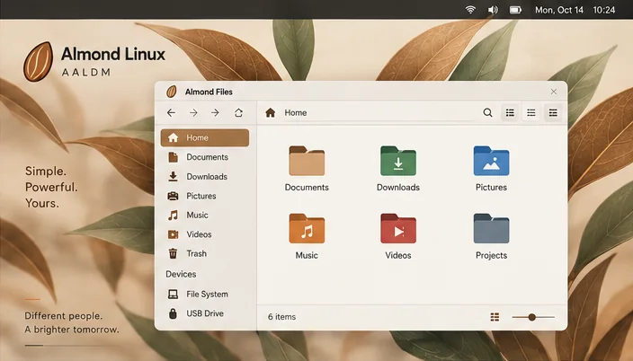
Simple. Powerful. Yours.
Scroll
Edition one · in development
A All Little Distribution Model
The light Almond, made for the PCs that other systems left behind.
ALMOND PURE · LIGHT
Cream surfaces, soft leaves and a slim top bar that stays out of the way. Files opens to the folders you use, with Places on the left.

ALMOND PURE · DARK
The same desktop at night. Settings keeps every visual choice in one calm window: theme, accent colour, icon style and interface scale.
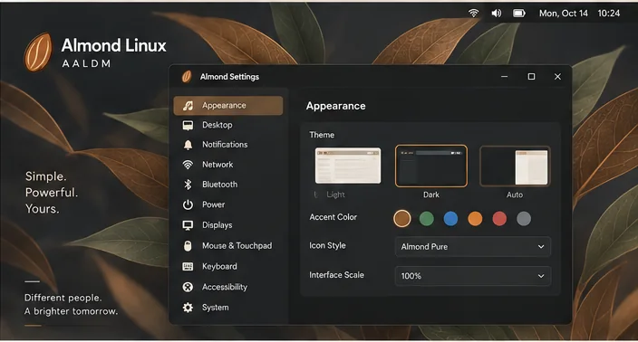
ALMOND LAUNCHER
Press Super and start typing. The launcher finds your apps, recent files and power options, then gets out of the way.
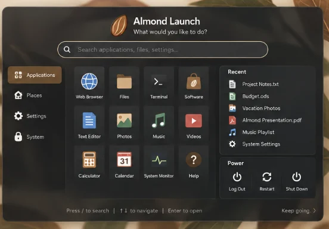
ALMOND FILES · ALMOND FOLD
Folders wear their purpose: green for Downloads, red for Music, plum for Videos. A dock on the left keeps Home, Applications, Places and Settings close.
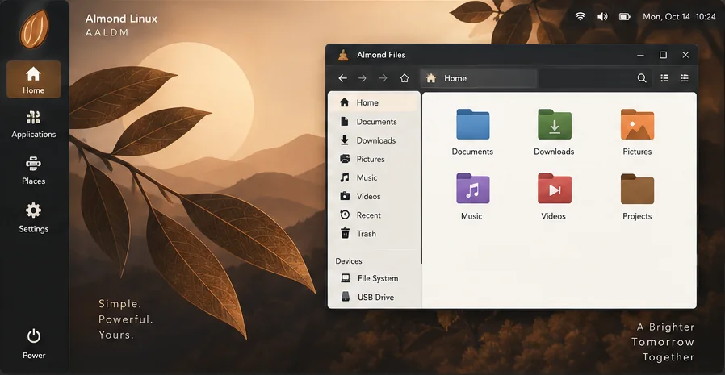
ALMOND PURE · MENU
The application menu sorts programs into plain groups, and the calendar keeps notifications beside the date instead of over your work.
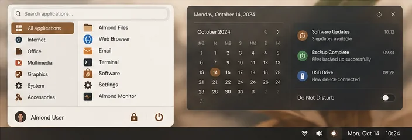
Not a concept
The first AALDM test build, running in a VirtualBox virtual machine on 17 October 2026. Plainer than the design for now: the Almond Pure look arrives piece by piece.
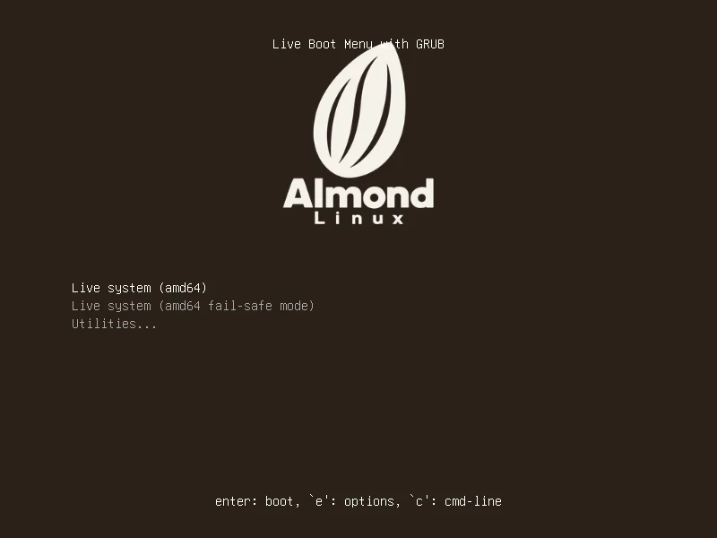
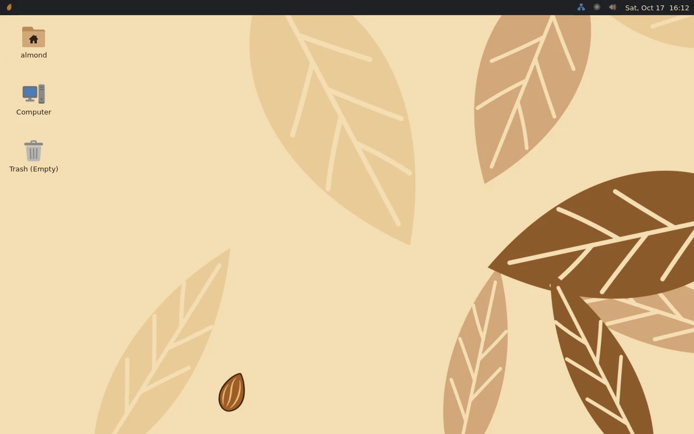
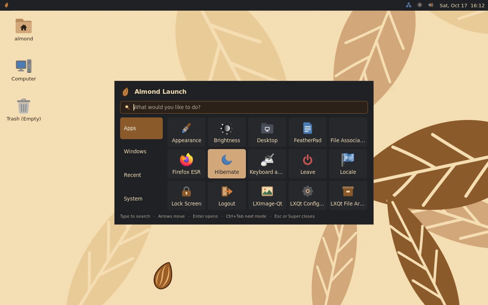
Real screenshots · VirtualBox · 17 October 2026
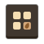
Real files, not a mockup
Flat, warm and readable down to sixteen pixels. Every icon here is drawn from the Almond Pure icon theme.
Wallpapers · Almond Pure
AALDM · Almond 0.1 ‘Marcona’
Measured on the first test build, 17 October 2026, in a VirtualBox virtual machine (test report). It is an experiment: not released, and not yet tried on a real PC.
Edition two · designed, not yet built
A All Large Linux Distribution Model
The full Almond for newer PCs: a bigger, more modern desktop with room for the nicer touches.
Its visual design, Almond Fusion, was approved on 18 October 2026. Building it starts after AALDM.
AALLDM · THE DESKTOP
A wider desktop for newer PCs: the launcher, a side dock, Files with a preview panel, and quiet widgets for the weather, music and the week ahead.
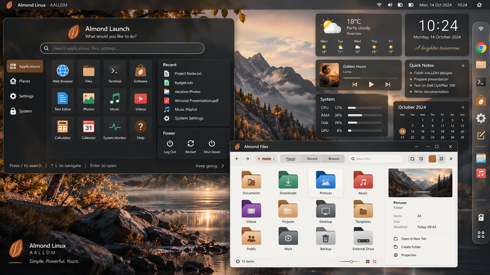
ALMOND FUSION
Almond Fusion is the AALLDM look: dark panels, warm light and a dock you can reach from anywhere. Files sits in the middle, the widgets keep to the edge.
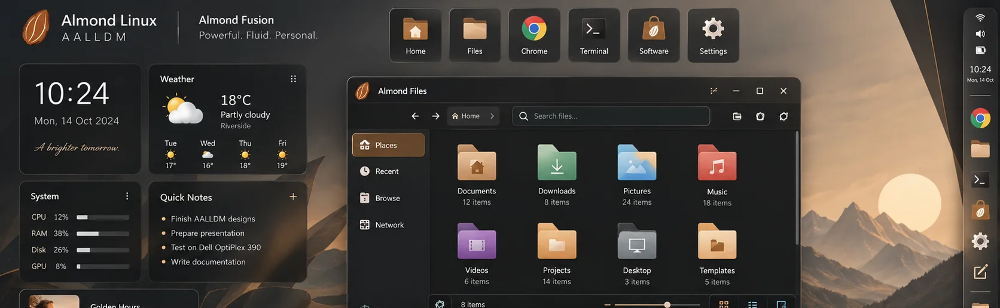
ALMOND FILES PRO · EXPLORE
Places, Recent and Browse live in one header, so the folders get the whole window.
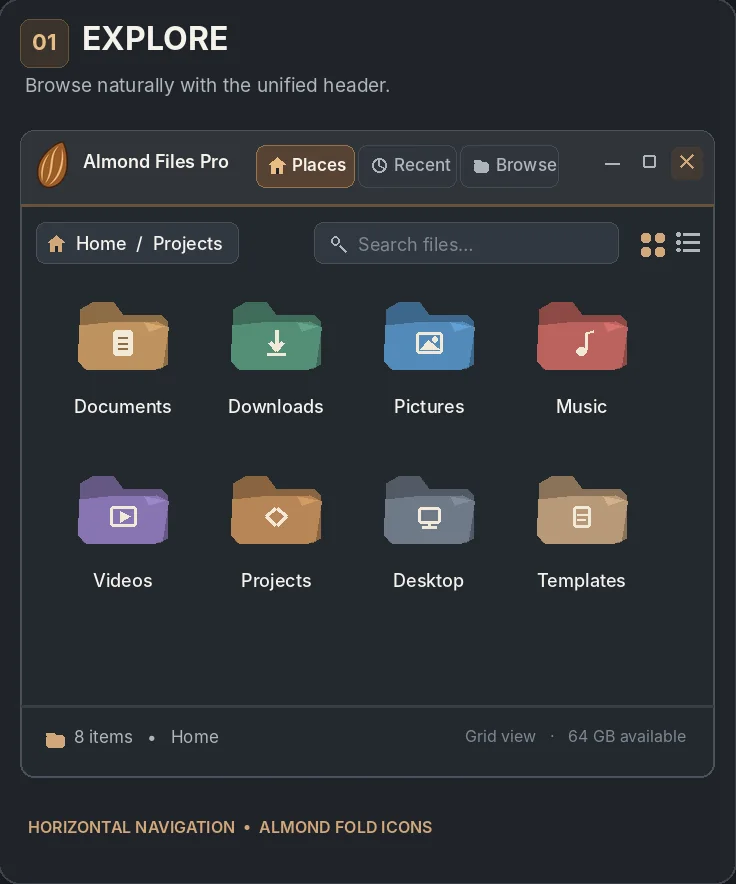
ALMOND FILES PRO · SELECT
Copy, Move, Rename, Delete and Share only appear once something is selected, each with a keyboard shortcut.
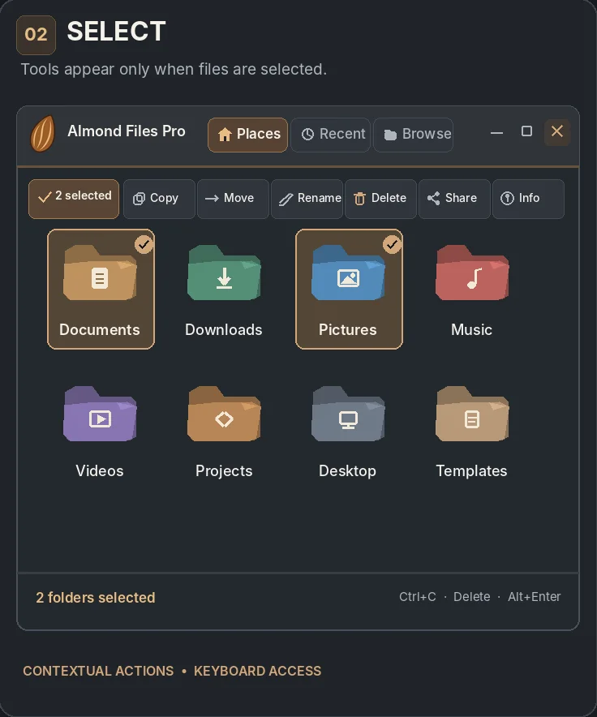
ALMOND FILES PRO · PERSONALIZE
Compact or horizontal navigation, floating or header actions, icon size and folder colours, with a live preview and a reset to default.
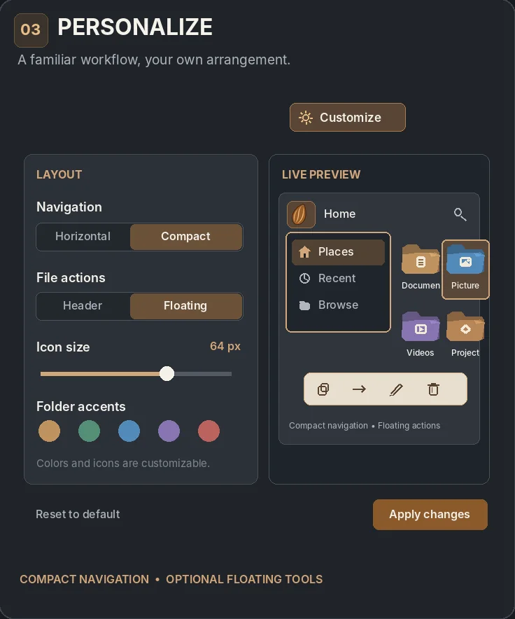
Almond Linux is an independent project, built in the open.